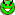
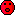

This page is used to control what smileys are supported by the wiki. Just write the text of a smiley to display it.
- :)
- :-)
- :D
- :-D
- B)
- B-)
- :))
- :-))
- ;)
- ;-)
- :\
- :-\
- :/
- :-/
- :|
- :-|
- >:> 
- X-(
- <:(
- :(
- :-(
- :-?
- :-P
- :o 
- |)
- |-)
- {OK}

- {X}
- {i}
- (./)

- (!)
- [!]
- /!\
- (?)
- {x}
- {*}
- {o}
- {1}
- {2}
- {3}
For example:
To change the supported smileys, just edit the lists on this page. Note that the format is important; each list item should start with the text that is turned into the smiley, escaped so that users can see what produces it, followed by a WikiLink to the image to display.
Bear in mind that the link to the image needs to be written in a way that will work if it's copied to other pages on the wiki. So be sure to include the smileys directory in the path to the file.